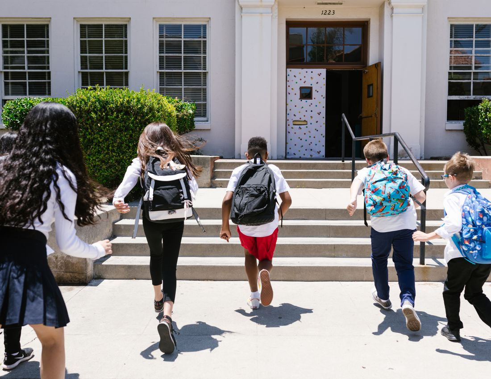
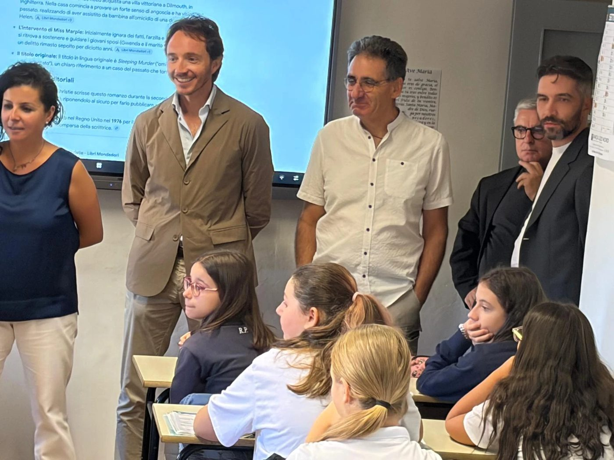
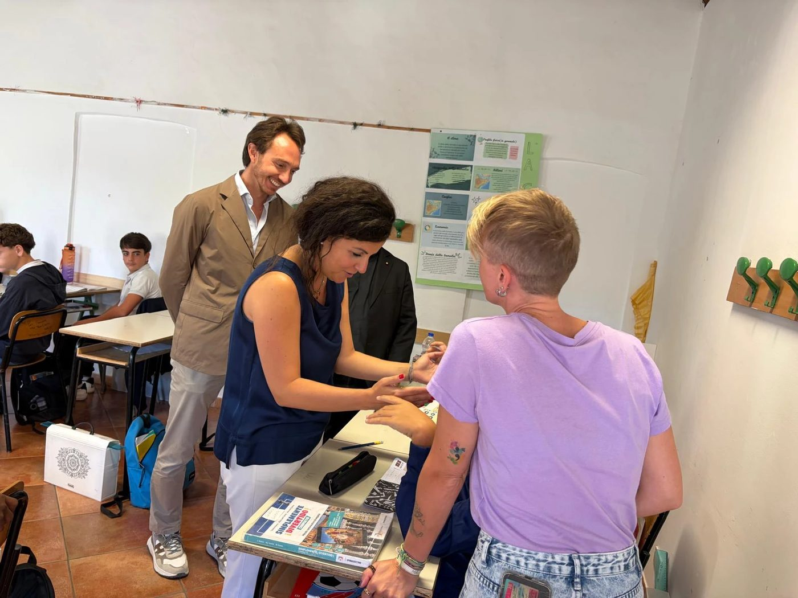
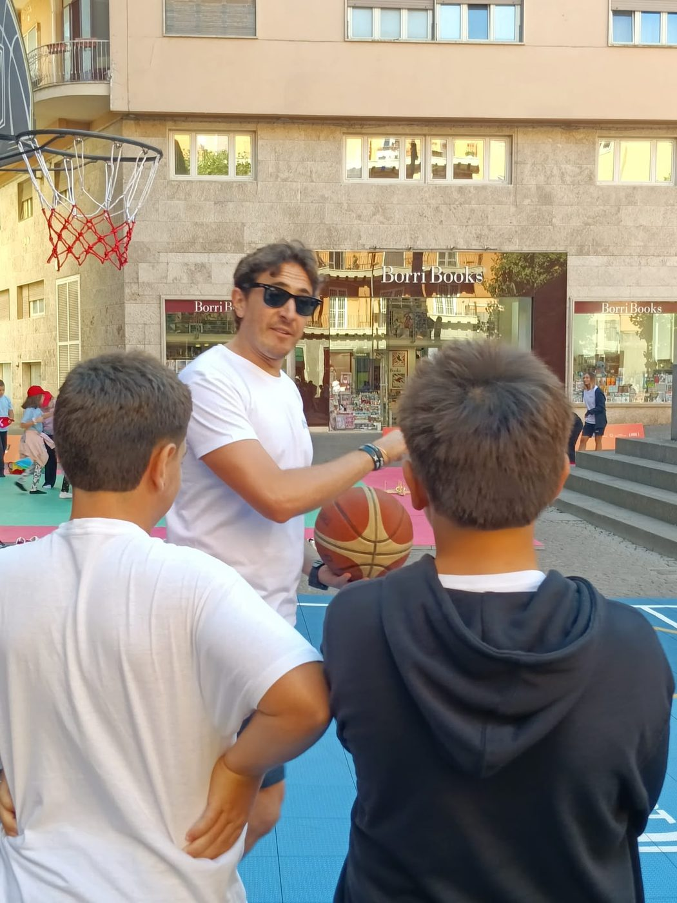
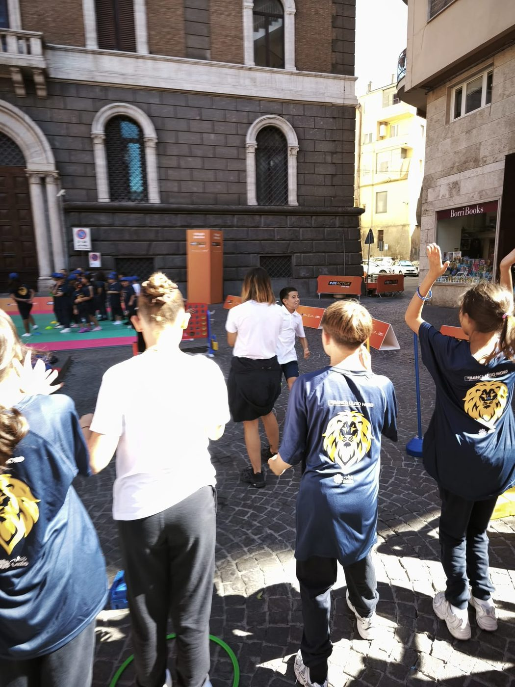
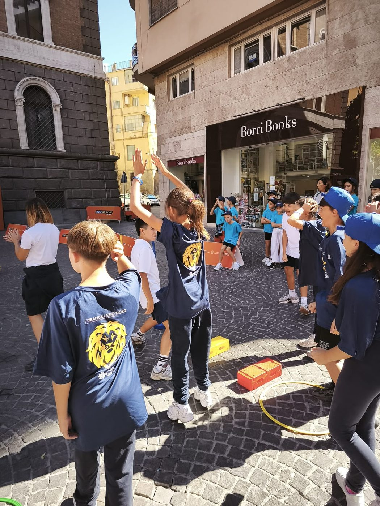
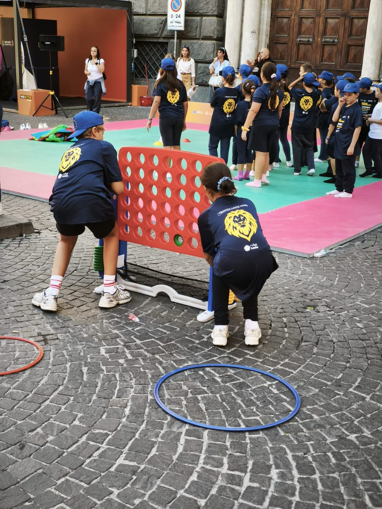

Comunicazioni, eventi e momenti significativi della vita della scuola.
Dopo più di trent'anni di amorevole dedizione alla nostra scuola, la professoressa Carla Pollidori lascia l'incarico di coordinatrice didattica a don Alfredo Cento. Grazie, Preside!
Leggi l'articolo completoLa sindaca di Viterbo, Chiara Frontini, è venuta a trovarci per farci gli auguri di buon anno scolastico: ha visitato la scuola e incontrato studenti e docenti.
Leggi l'articolo e guarda le fotoUna grande giornata di festa e di sport alla Viterbo Half Marathon Città dei Papi per la Secondaria di primo grado e per le classi quarta e quinta della Primaria.
Leggi l'articolo e guarda le foto
Un grande orgoglio per tutta la scuola: i nostri studenti si sono distinti nel concorso del Serra Club, dimostrando impegno, talento e creatività. Complimenti ai ragazzi e grazie agli insegnanti che li hanno accompagnati.
Leggi l'articolo completoPer comunicazioni e avvisi puoi contattare la segreteria o seguire i nostri canali ufficiali.
Ottobre 2026 · Vita della scuola
Dopo più di trent’anni di amorevole dedizione alla nostra scuola nella veste di coordinatrice didattica, la professoressa Carla Pollidori, da tutti conosciuta come “la Preside”, ha deciso a malincuore di dimettersi dal suo incarico, rimettendolo nelle mani di don Alfredo Cento, nuovo Coordinatore delle attività didattiche ed educative.
La Preside Pollidori è stata ufficialmente ringraziata da tutto il personale scolastico, dai docenti della scuola secondaria di primo grado (di cui si è particolarmente occupata) e dalle maestre, come anche dai suoi cari studenti.
Rimarrà sempre nel cuore di tutti noi per l’impegno profuso, per l’attenzione, per il cuore che ha messo nello svolgimento della sua missione.
Qui la vediamo insieme a don Alfredo Cento, al fondatore della scuola don Luigi Mignani e al prof. Gianluca Zappa.
Inizio anno scolastico 2026/27 · Vita della scuola
La nostra “prima cittadina”, Chiara Frontini, è venuta a visitarci per farci gli auguri in occasione dell’inizio dell’anno scolastico 2026-27. Le abbiamo cantato il nostro inno, «Preferisco il Paradiso», per esprimere la gratitudine di averla tra noi.
La dottoressa Frontini, accompagnata dal consigliere comunale Onofri, ha visitato tutti gli ambienti della scuola e ha incontrato gli studenti, complimentandosi con noi per quello che facciamo e incoraggiando tutti, docenti e studenti, a continuare con tutto l’impegno possibile per costruire il presente e il futuro.


Settimana europea dello sport · Sport
Grande giornata di festa e di sport per i nostri studenti della scuola secondaria di primo grado e per le classi quarta e quinta della scuola primaria, che hanno partecipato alla manifestazione Viterbo Half Marathon Città dei Papi, in occasione della settimana europea dello sport organizzata dal Comune di Viterbo in collaborazione con il CONI.
Seduti in prima fila durante la cerimonia di apertura, i nostri studenti sono stati anche esempio di compostezza e di attiva partecipazione.




17 Maggio 2023 · Riconoscimenti
Brillante affermazione dei giovani studenti della scuola "Santa Maria del Paradiso" alla XVIII edizione del concorso scolastico indetto dal Serra Club di Viterbo. Gli studenti del Paradiso hanno conquistato il primo e il secondo posto sia nella sezione della scuola primaria sia in quella della scuola secondaria di primo grado. Primo e secondo premio per la primaria rispettivamente agli studenti Stefano Pancioli e Iacopo Zarletti.
Per la secondaria di primo grado podio più alto per Elena Bocchino, seguita a ruota da Raffaele Maria Zappa. La commissione (costituita dalle docenti Laura Ruggeri, Laura Sabatini e Loretta Landi) nell'assegnare i premi ha messo in evidenza il coinvolgimento personale, sulla base di vere e vissute esperienze, espresso dai ragazzi nei loro testi rispetto alla tematica del concorso, incentrata sul perdono.
La premiazione si è tenuta presso Palazzo Bugiotti alla presenza del governatore del Serra Club di Viterbo, Marcello Bonotto, e del Presidente, Beatrice Valiserra. Ciliegina sulla torta: l'elaborato di Elena Bocchino ha conquistato anche il terzo posto a livello nazionale: la studentessa sarà premiata in una cerimonia a Matera.